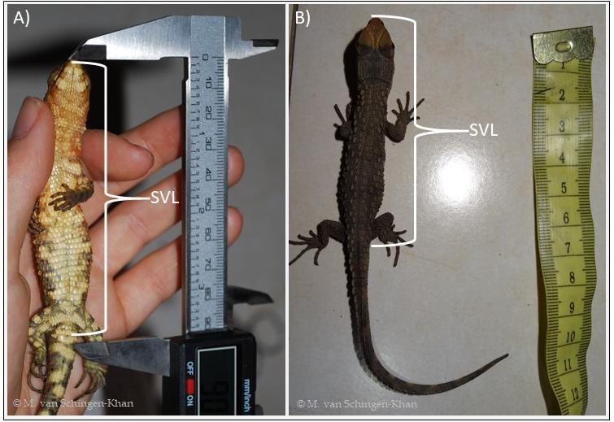
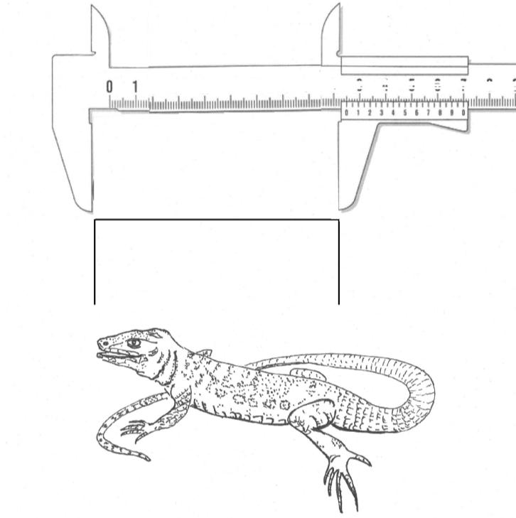
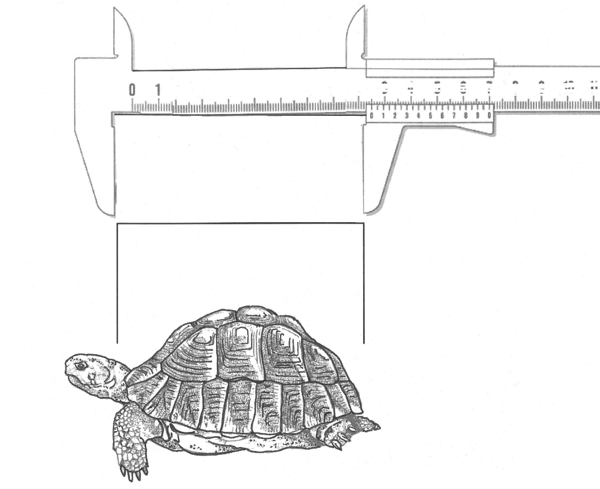

Measuring reptiles
In some cases, it may be necessary to set size limits for the import of certain reptile species from specific countries and for specific source codes as tool to ensure the sustainability of harvesting and trade. To ease the enforcement, it is recommended to follow these scientifically standardized measurements:
- In the case of lizards (suborder Lacertilia) the snout-vent-length (SVL) is the most commonly used measure. The reason for this is that lizards often lose parts of their tails in the course of their lives or “sacrifice” them as a defensive measure (caudal autotomy). In most cases, although tail regrowth occurs, the regenerated tail is shorter and is internally supported by a solid rod of cartilage rather than bony vertebrae. From below, the SVL can be measured from the tip of snout to the cloaca (see Figure 18 and Figure 19). If living lizards do not keep their tail still, are restless or wiggling around the snout-vent-length can be determined from “above” (= dorsal) by measuring in a straight line from the tip of snout to the caudal (towards the tail) insertion of hind limbs (see Figure 18 and Figure 19). Depending on the size of the animal a calliper or measure tape can be used.
- In the case of turtles and tortoises, the most suitable standard measure is the straight carapace length, extending in a straight line from the anterior margin of the nuchal plate to the posterior margin of the supracaudal plate. See Figure 20. This measure can be done from above by placing the calliper or measure tape laterally to the animal.
- In the case of snakes and crocodiles, using the total length (TL), the straight-line distance measured from the tip of the snout to the tip of the tail, is recommended. Measures can be done from above with a measure tape (Fig. 4 and 5), with a small rope that is placed along the animal’s body and measured afterwards, in a long tube, or with the help of paper with quadrats of known size that is placed below the animal and can be counted. Alternatively, the snout-vent-length can be used for crocodiles.
Figure 18: A) Measuring snout-vent-length from below from tip of snout to cloaca; B) Measuring SVL from above from tip of snout to caudal insertion of hind limbs. Photo M. van Schingen-Khan.

Figure 19: SVL of a lizard from above, from tip of snout to insertion of caudal hind limbs. Drawing by U. Schepp.

Figure 20: Straight carapace length in turtles and tortoises. Drawing by U. Schepp after a pattern from Mertens & Wermuth (1961).
